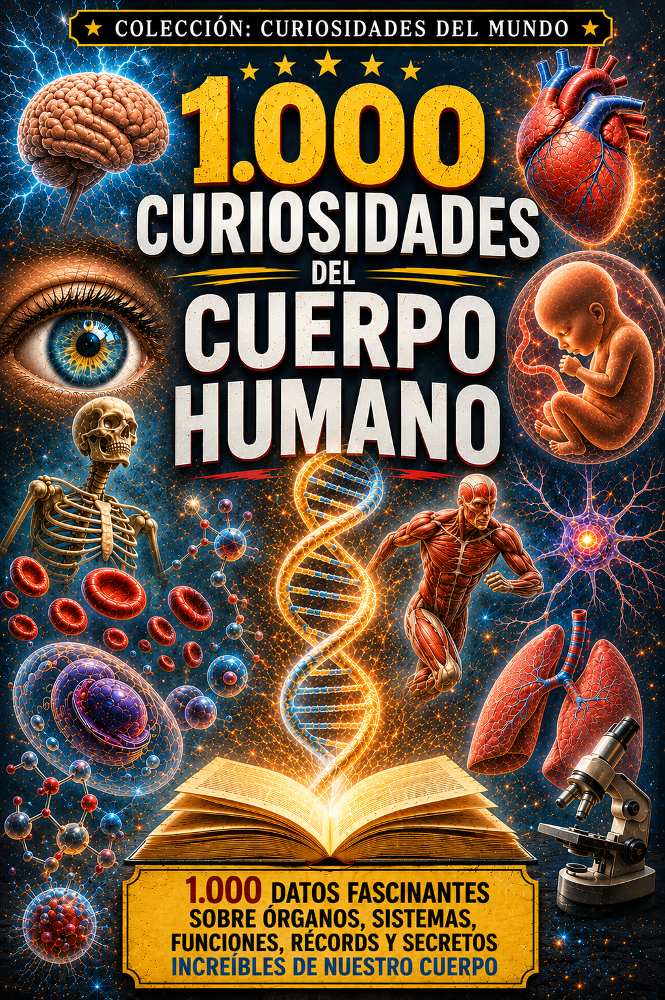

Hechos curiosos para mentes despiertas
Una sorprendente colección de curiosidades sobre historia, ciencia, naturaleza, cultura, personajes, lugares y vida cotidiana. Un libro para aprender algo nuevo en cada página.
Comprar en AmazonColección Curiosidades del Mundo
Una colección de libros para lectores curiosos que disfrutan aprendiendo hechos sorprendentes sobre historia, cultura, cine, sociedad y muchos otros temas.
Una sorprendente colección de curiosidades sobre historia, ciencia, naturaleza, cultura, personajes, lugares y vida cotidiana. Un libro para aprender algo nuevo en cada página.
Comprar en Amazon
Un viaje por los grandes momentos de la humanidad a través de personajes extraordinarios, guerras, imperios, inventos, costumbres y episodios sorprendentes que no suelen aparecer en los libros de historia.
Comprar en Amazon
Un recorrido por la historia de España a través de reyes, guerras, exploradores, personajes extraordinarios, costumbres y episodios sorprendentes, desde sus orígenes hasta la actualidad.
Comprar en Amazon
Un viaje fascinante por el cuerpo humano a través de curiosidades sobre el cerebro, los sentidos, los órganos, los huesos, los músculos, la genética y los sorprendentes mecanismos que nos mantienen vivos.
Comprar en AmazonUn recorrido por la historia de Estados Unidos, desde los primeros pueblos indígenas y las colonias hasta nuestros días. Exploradores, presidentes, cowboys, inventores, grandes guerras, la conquista del Oeste, Hollywood y la carrera espacial a través de mil historias sorprendentes.
Comprar en AmazonUn recorrido sorprendente por la sexualidad humana a través de la historia, la ciencia y la cultura. Deseo, atracción, orgasmo, fantasías, prácticas sexuales, anticoncepción, reproducción, juguetes, parafilias, mitos, tabúes, parejas y muchas otras curiosidades sobre el sexo.
Comprar en AmazonUn recorrido por la Alemania nazi, desde el nacimiento del nazismo y el ascenso de Hitler hasta la caída del Tercer Reich. Las SS y la Gestapo, propaganda, resistencia, Segunda Guerra Mundial, Holocausto, Núremberg, criminales nazis, desnazificación y las consecuencias que llegaron hasta la Guerra Fría.
Comprar en Amazon